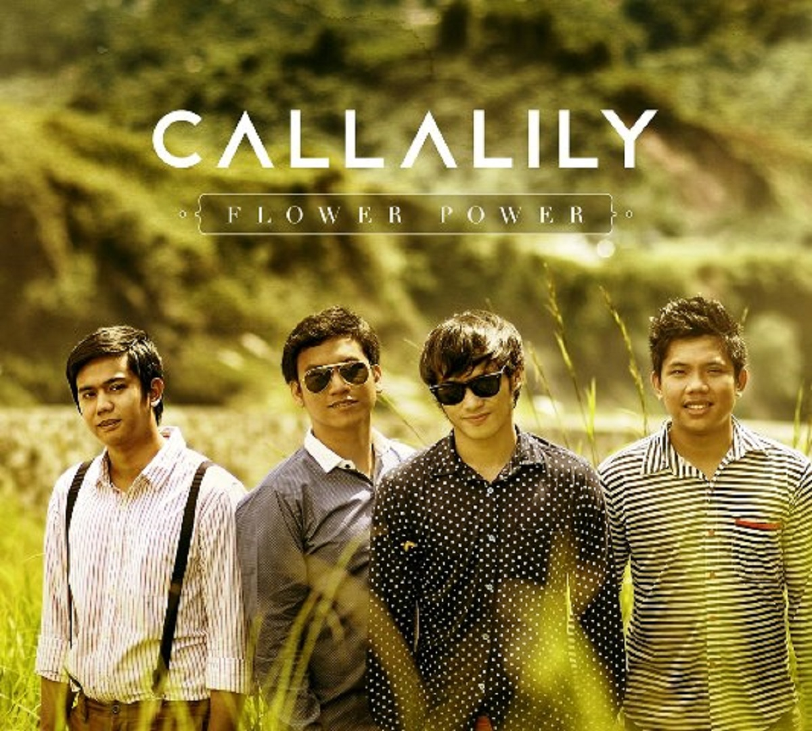
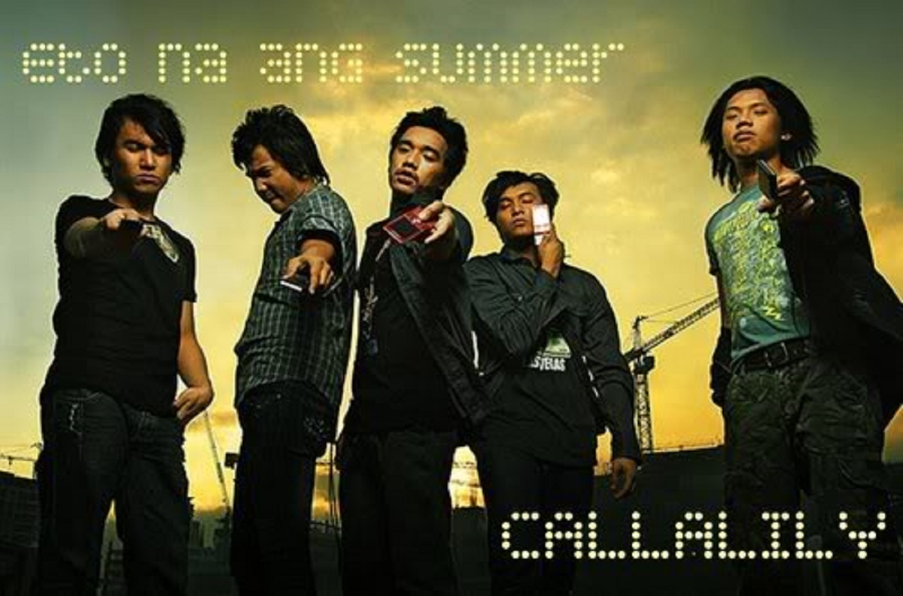
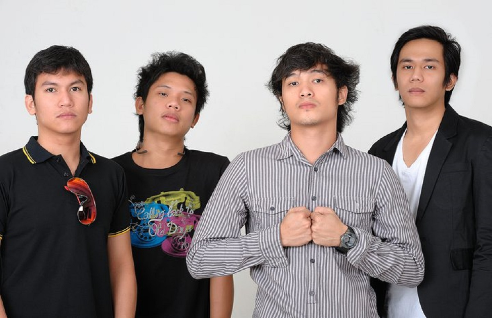

By: Gian Carlo Vizcarra | Updated July 6, 2012 - 12:00am
MANILA, Philippines - Tomorrow, July 7, is the seventh day of the seventh month of the year and it is the seventh anniversary of the rock band Callalily, composed of Kean Cipriano, Tatsi Jamnague, Aaron Ricafrente and Lemuel Belaro.
“I can safely say that 777 marks the rebirth of Callalily,” says frontman Kean. “It is a new start for the group and our music. This a landmark point in our story as a group, and we are excited because it feels like we are starting over again.”
Callalily starts fresh with its new record label Universal Records, which will release the band’s fourth studio album in a few months.
Callalily joins the elite roster of local artists of Universal Records like Gary Valenciano, Jose Mari Chan, Ogie Alcasid, Regine Velasquez, Christian Bautista, Jaya, Noel Cabangon, Jay-R, Sam Concepcion, Emmanuelle, Richard Poon, Gloc-9, Parokya Ni Edgar, Kamikazee, Imago and Sponge Cola.
“After three years, we are ready to present to everyone how our music has evolved and how we have improved as musicians and storytellers,” shares Kean. “The album that we will be releasing is a step-up from all our previous releases.”
The forthcoming album, which comes after the hit albums Destination XYZ, Fisheye and Callalily, is also Callalily’s first release without its former guitarist Alden Acosta, who migrated to the United States in 2010.
After Alden left, Callalily decided not to get a new guitarist. Instead, the group challenged themselves to fill the void without adding a new member.
“We really had to work harder, all of us,” adds Kean. “I even had to harness my guitar-playing skills, so I can do it during our live gigs. It is hard work, but everything paid off well. It is very rewarding.”
Kean adds that he is doubly excited at the band’s forthcoming album because it is his first time to play the guitars (and tambourines) in an album.
For the soon-to-be-released album, Lemuel plays synth, while Tatsi performs the adlibs.
Kean, who has dabbled in acting via movies and TV shows like Ang Babae Sa Septic Tank, BFGF and the soon-to-be-released The Reunion, clarifies that music will always be his priority.
“Showbiz, for me, was never planned. It was presented to me, and since my management felt that it was something worth pursuing, I’ve tried it and I enjoyed it,” enthuses Kean. “However, music will always be No. 1 for me.”
The band’s dedication to music has been rewarded with numerous record awards, recognitions from various award-giving bodies in the country and the undying love and support of its legion of fans.
On Callalily’s seventh anniversary, the band hopes to have a chance to collaborate with Bamboo and Jessica Sanchez, and to have the opportunity to present its music outside of the Philippines.